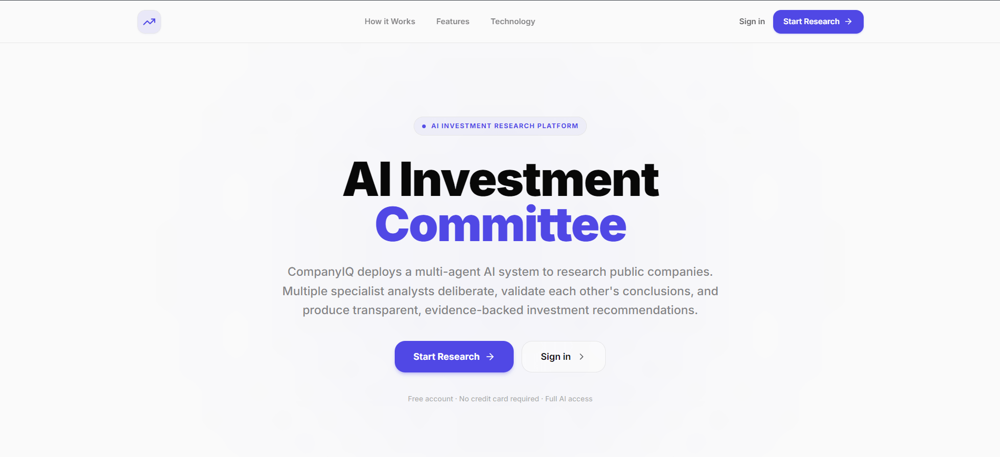
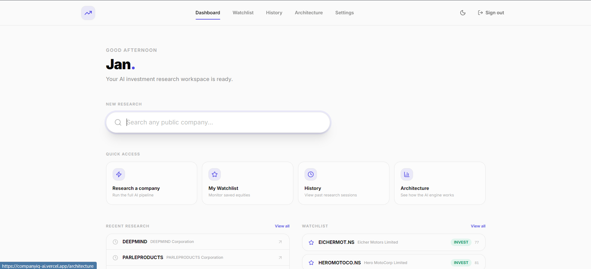
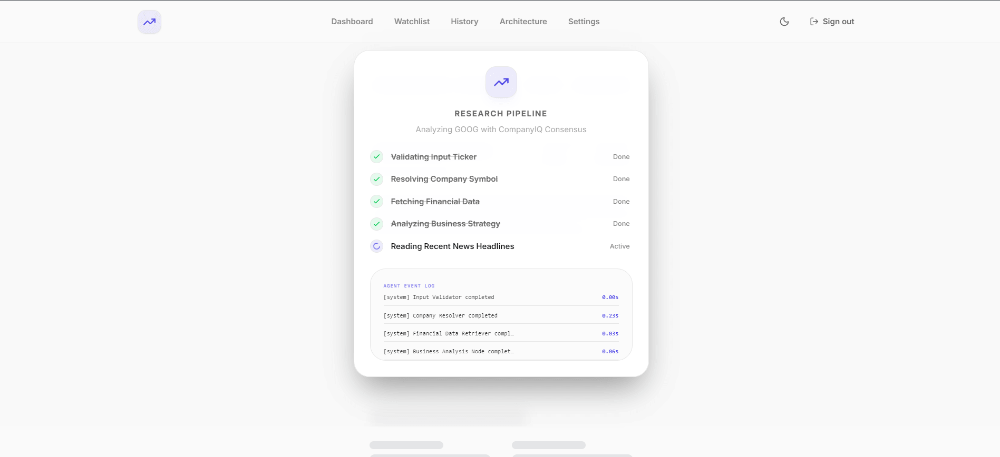
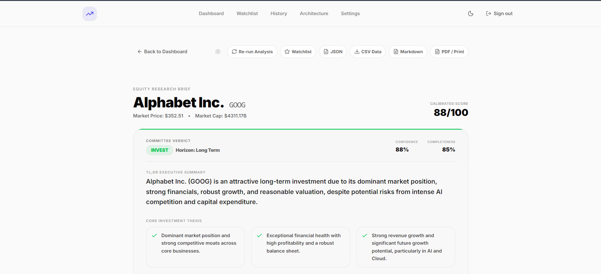
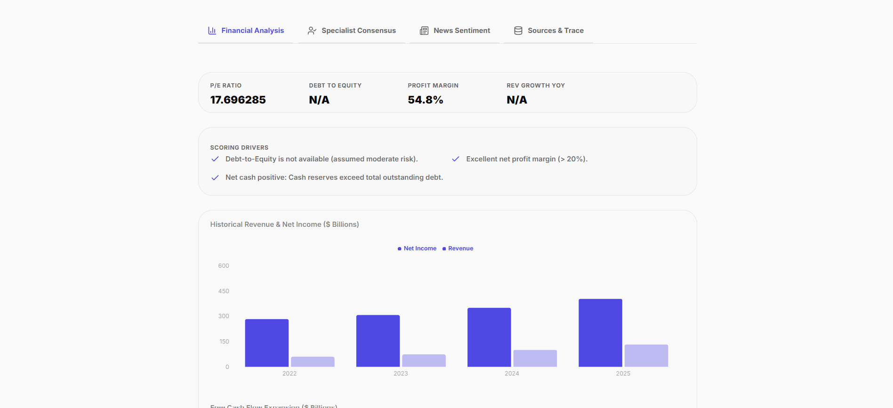
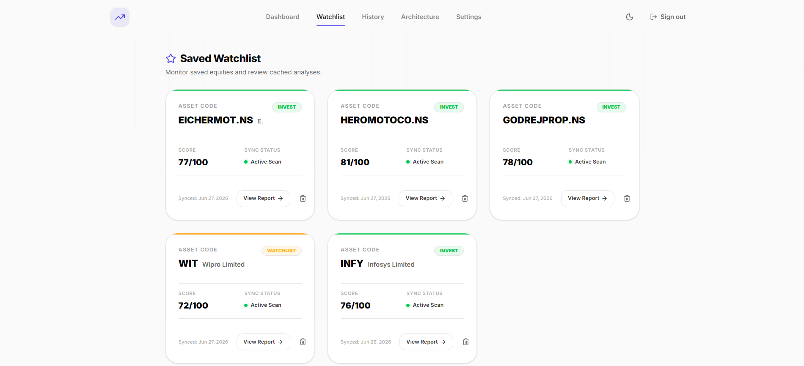
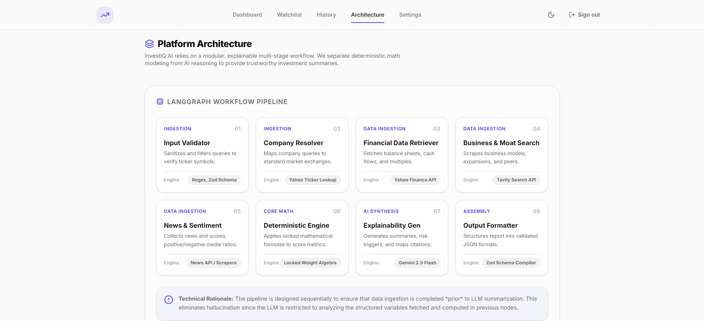

CompanyIQ
An enterprise-grade AI-powered investment research platform designed to automate deep equity research, score assets mathematically, and justify recommendations with full explainability.







What is CompanyIQ?
CompanyIQ is an AI-native SaaS platform modeled after premium, minimalist interfaces like Perplexity, Stripe, and Linear. It helps analysts automate the heavy lifting of equity research by pulling live data from market endpoints, evaluating it via a locked mathematical scoring model, and structuring the output with an explainable AI synthesis node.
By splitting Fact Retrieval from AI opinion generation, CompanyIQ guarantees that recommendations are anchored to actual data, shielding users from LLM hallucination risks.
The Hallucination & Trust Gap in AI Finance
Traditional AI investment agents typically generate qualitative narratives without verified quantitative backing. Standard LLMs struggle with basic financial calculations and often make up numbers when scanning PDFs or web scrapers. This makes their summaries useless for institutional compliance.
Hallucinated Metrics
Standard LLMs frequently make mistakes with simple arithmetic and financial statement numbers (e.g. debt ratios).
Unjustified Ratings
Black-box LLMs provide bullish or bearish verdicts without an audit trail of how they arrived at that conclusion.
Static Snapshots
Financial reports represent single snapshots in time and fail to explain changes or shifts in score ratios over time.
Complex API Latency
Fetching multi-source datasets (Yahoo, news feeds, search indexes) causes page timeouts on traditional REST API models.
LangGraph Workflow
CompanyIQ handles complex orchestrations by utilizing a multi-stage LangGraph workflow. Raw financial extraction is separated from opinion generation, producing a reliable process flow:
- Input Validator: Sanitizes input query query strings (Zod validation).
- Company Resolver: Matches keywords to tickers (e.g., "Apple" ➔ AAPL) using Yahoo Finance search APIs.
- Financial Data Ingestion: Pulls income statements, balance sheets, cash flows, and valuation multiples using
yahoo-finance2. - Business & Moat Search: Queries product details, qualitative parameters, and competitor listings via Tavily.
- News & Sentiment Node: Filters last 30 days of media coverage to weight sentiment ratios.
Deterministic Scoring Engine
Rather than letting the LLM estimate the stock score, CompanyIQ calculates a mathematically locked index using specific weights:
Cash/debt ratios, net margins, leverage
YoY top-line revenue & trailing EPS
Margin deviations vs sector baseline
P/E, PEG metrics, and media coverage sentiment
Enterprise Trust Features
Decision Provenance Grid
Maps every AI thesis assertion back to a reliability trace (High, Medium, Low), specifying the exact sentence source and audit context.
Delta Change Logs
Before running the agent, CompanyIQ queries PostgreSQL for the company's previous report, automatically generating an objective verdict change log detailing rating changes.
Hidden Diagnostics Drawer (Ctrl + Shift + I)
A hidden engineering console displays active LangGraph variables, latency telemetry, API request costs, and the state graph traversal sequence in real time.
Highlights & Performance Optimizations
- Lazy-Loaded Database Client Proxy: Solved build-time static pre-rendering compilation errors by wrapping Prisma Client in a JavaScript proxy, delaying runtime initialization.
- SSE Progress Streaming: Next.js edge handlers stream LangGraph node logs in real-time, illuminating active processing stages on the client dashboard.
- Stress-Testing Engine: Integrates scenario modeling (simulating interest rate spikes or margins compressions) to dynamically recalculate metric scores.